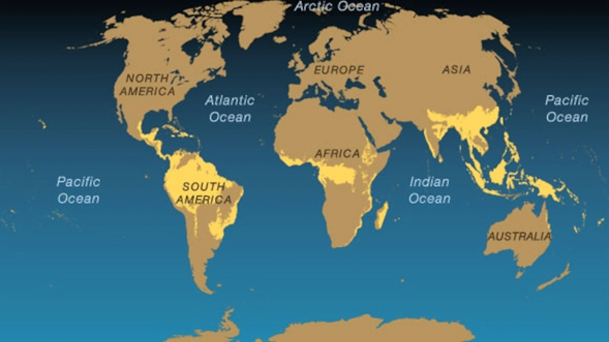

So as we know Tropical Evergreen Forest is found in places which receive more than 200cm rainfall. I am
going to give you a look that where are these foresets found and a small video of one of the Tropical
Evergreen Forest

So as you can see most of the Tropical evegreen forest is found on south america. The places in India
having tropical evergreen forest are Tamil Nadu , Kerala , Karnataka , Maharashtra , Assam , Arunachal
Pradesh , Nagaland , Tripura , Meghalaya , West Bengal , Andaman and Nicobar Islands.
CLIMATE IN TROPICAL EVERGREEN FOREST
Climate in tropical evergreen forest is wet and humid because of heavy rainfall , the average annual
temperature is between 25°C and 27°C and average annual humidity exceeds 77 percent in tropical evegreen
forest.
VEGETATION IN TROPICAL EVERGREEN FOREST
Since this region receives a lot of amount of rainfall , that is why here all variety of plants are
avilable trees, shrubs, and creepers.
Some of the plants are Ebony , Mahogany , Rosewood , Rubber Chinchona etc.
WILDLIFE IN TROPICAL EVERGREEN FOREST
Their are a lot of variety of animals found in tropical evergreen like Elephants , Monkeys , Lemur ,
Deer , One-Horned Rhino (Assam, West Bengal) , Birds , Bats , Sloth , Scorpions , Snails etc.
SOME FUN FACTS ABOUT TROPICAL EVERGREEN FOREST
Tropical evergreen forest almost cover 7% of the earth’s surface.